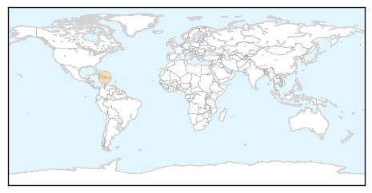
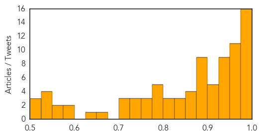

Chikungunya
30-Day Web Trend
0 alerts, 0 warnings
30-Day Twitter Trend
4 alerts, 0 warnings
Article Locations
Article Confidences

Top Articles:
Top Tweets:
-
No tweets found for Sep 15, 2015
Dengue Fever
30-Day Web Trend
7 alerts, 4 warnings

30-Day Twitter Trend
4 alerts, 0 warnings

Article Locations
Article Confidences
Top Articles:
- 0.999
- Cases of Dengue Fever in Taiwan takes toll SouthEast ASIA News
- 0.996
- Dengue scare grips Capital
- 0.995
- What are the symptoms
- 0.995
- Cases of Dengue Fever Multiply in Southern Taiwan
- 0.993
- Sporadic rain causes rise of dengue cases in Mumbai
- 0.992
- Pb, Har on alert as dengue scare spreads
- 0.992
- Punjab, Haryana On Alert As Dengue Scare Spreads
- 0.990
- All You Need To Know About Dengue
- 0.987
- India's New Delhi faces dengue fever outbreak
- 0.987
- Delhi faces dengue fever outbreak
- 0.987
- Death toll from dengue rises to 9 in Indian capital - Xinhua
- 0.985
- Punjab, Haryana on alert as dengue scare spreads
- 0.984
- Delhi battles dengue fever surge
- 0.981
- Hospitals rush to ready 'disaster ward' beds as dengue grips Delhi
- 0.981
- Dengue out of control, no chutti for doctors
- 0.976
- Dengue fever firewall to be set up: Mao
- 0.971
- Dengue claims second life in ‘fully prepared’ Ghaziabad
- 0.969
- Union Health Minister to hospitals No Dengue patient to be denied
- 0.968
- Dengue menace in Delhi: AAP government caught napping as toll climbs
- 0.966
- Delhi running out of hospital beds as dengue cases cross 1,800
- 0.964
- Dengue outbreak: Delhi's hospitals to get 1,000 more beds, SE Asia News & Top Stories
- 0.964
- Dengue claims 15-yr-old boy in Ahmedabad
- 0.961
- India cancels leaves of doctors in Delhi in case of possible dengue outbreak - Xinhua
- 0.958
- Dengue scare grips Delhi, 613 fresh cases in a week
- 0.957
- Hospitals in line of fire
- 0.956
- Parents commit suicide as son dies of dengue
- 0.953
- Delhi grapples with dengue outbreak, 9 dead, more than 1,800 affected
- 0.945
- Union Health Minister reviews preparedness on dengue in Delhi – The Financial Express
- 0.941
- Punia urges Centre and Delhi Govt. to work together to end dengue menace
- 0.936
- 'Worst is yet to come': Here's what you need to know about Delhi's dengue crisis
- 0.936
- Executive Yuan forms command center to combat dengue fever
- 0.934
- 1800 dengue patients, full force Fumigation to kill mosquitoes in Delhi
- 0.933
- Rein in private hospitals overcharging dengue patients: JP Nadda to Delhi government
- 0.933
- Rein in pvt hosps overcharging dengue patients: Nadda to Delhi
- 0.930
- Haryana hospitals on high alert with rising dengue cases
- 0.926
- Rein In Private Hospitals Overcharging Dengue Patients: Nadda To Delhi Govt
- 0.923
- Dengue strikes Delhi, govt scrambles to tackle the situation
- 0.923
- Six-yr-old dies of dengue after hospitals reject him
- 0.923
- North MCD asks Kejriwal to own responsibility for dengue deaths
- 0.910
- Delhi Government Launches 24-Hour Dengue Helpline 011-23307145
- 0.909
- Rein in private hospitals overcharging dengue patients: J P Nadda to Delhi Government
- 0.896
- Rein in private hospitals overcharging dengue patients: JP Nadda to Delhi government
- 0.892
- Rein in private hospitals overcharging dengue patients
- 0.883
- 6 tips to fight dengue at home
- 0.883
- Another child suffering from dengue dies in Delhi after being turned down by five hospitals
- 0.883
- Health Minister Nadda assures full support to Delhi Govt. to tackle dengue problem
- 0.879
- Delhi orders extra hospital beds after dengue outbreak
- 0.878
- Dengue: Act against refusal, overcharging by hospitals, Centre asks Delhi Govt
- 0.878
- Delhi's Biggest Dengue Crisis in 5 Years
- 0.877
- Region warned about severe El Nino
Showing top 50 articles...
Top Tweets:
-
No tweets found for Sep 15, 2015